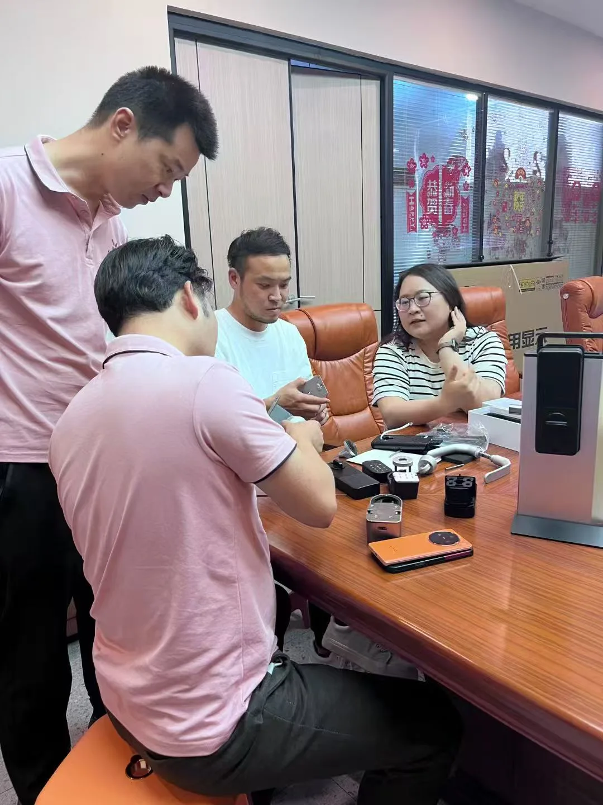

Em julho de 2026, dois clientes japoneses visitaram a fábrica de fechaduras inteligentes WAFU em Shenzhen. Examinaram in loco a fechadura remota invisível e a fechadura eletrônica sem fio, e discutiram adequação de portas no Japão, personalização OEM/ODM e entrega de exportação.

Contexto da visita
O mercado japonês exige alto disfarce na porta, operação silenciosa e fácil retrofit. Os clientes quiseram conhecer presencialmente P&D, inspeção de qualidade e capacidade de entrega de uma fábrica de fechaduras inteligentes em Shenzhen, e avaliar se OEM de fechadura antirroubo invisível e ODM personalizado atendem seus canais locais.
Intercâmbio técnico presencial
Durante a visita, ambas as partes revisaram corpos de fechadura, maçanetas e mecanismos internos, com foco na instalação da fechadura remota invisível, penetração remota e segurança, e uso de fechaduras sem chave em residências e apartamentos.
- Segurança estrutural: revisão de mecanismos internos e design antiarrombamento após instalação oculta
- Adequação de portas: caminhos de retrofit para tipos de porta comuns no Japão
- Entrega de exportação: certificação, avaliação de amostras, embarques e pós-venda para compradores internacionais
Direção de cooperação
Ambas as partes chegaram a uma intenção preliminar sobre testes de amostra, prototipagem e cooperação de canal no Japão. A configuração e o cronograma de entrega avançarão após a avaliação das amostras, apoiando a demanda de exportação de fechaduras inteligentes e fechaduras eletrônicas sem fio.
Resumo
Esta visita de clientes japoneses aprofundou o entendimento sobre estrutura do produto e adequação de mercado. A WAFU continuará a apoiar parceiros internacionais com soluções fiáveis de fechadura antirroubo invisível e fechadura eletrônica sem fio.